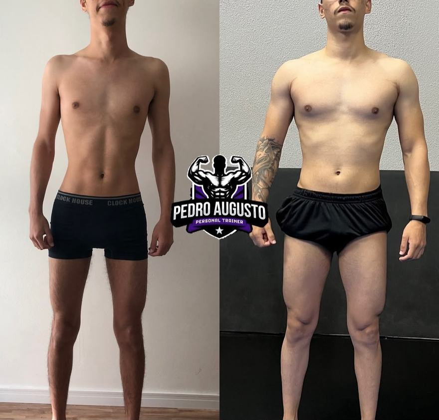
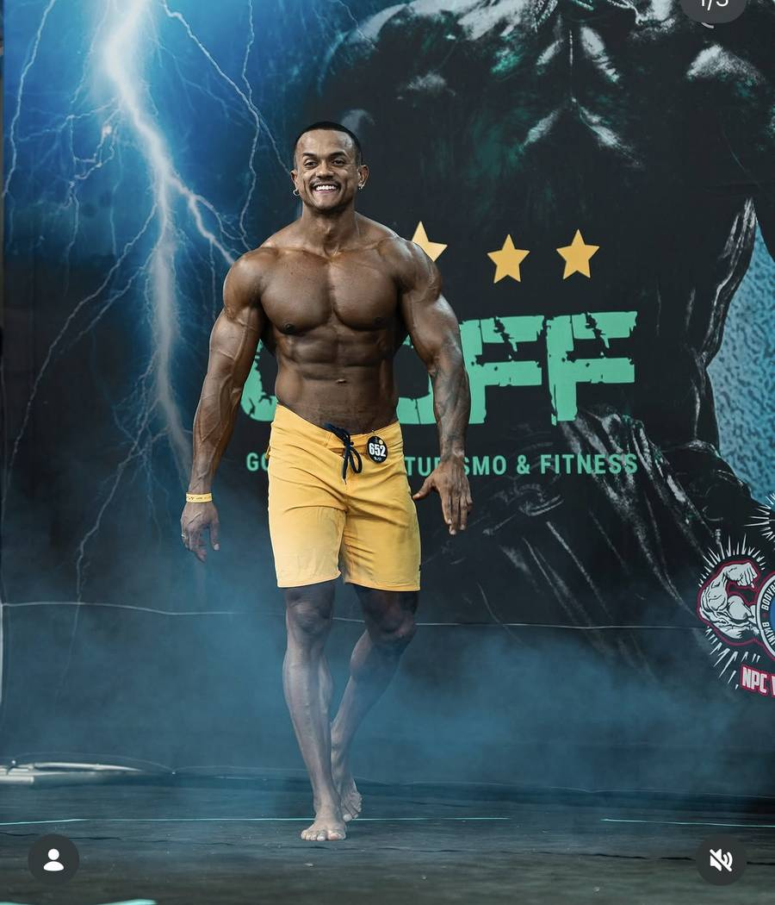
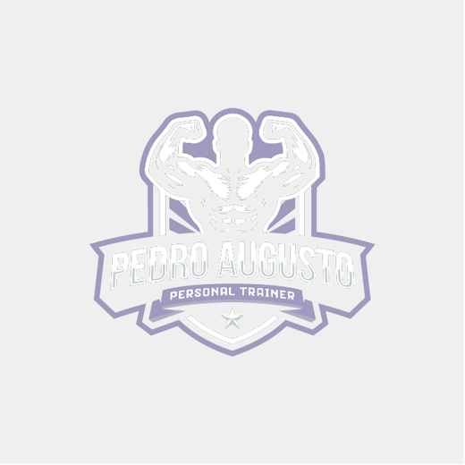
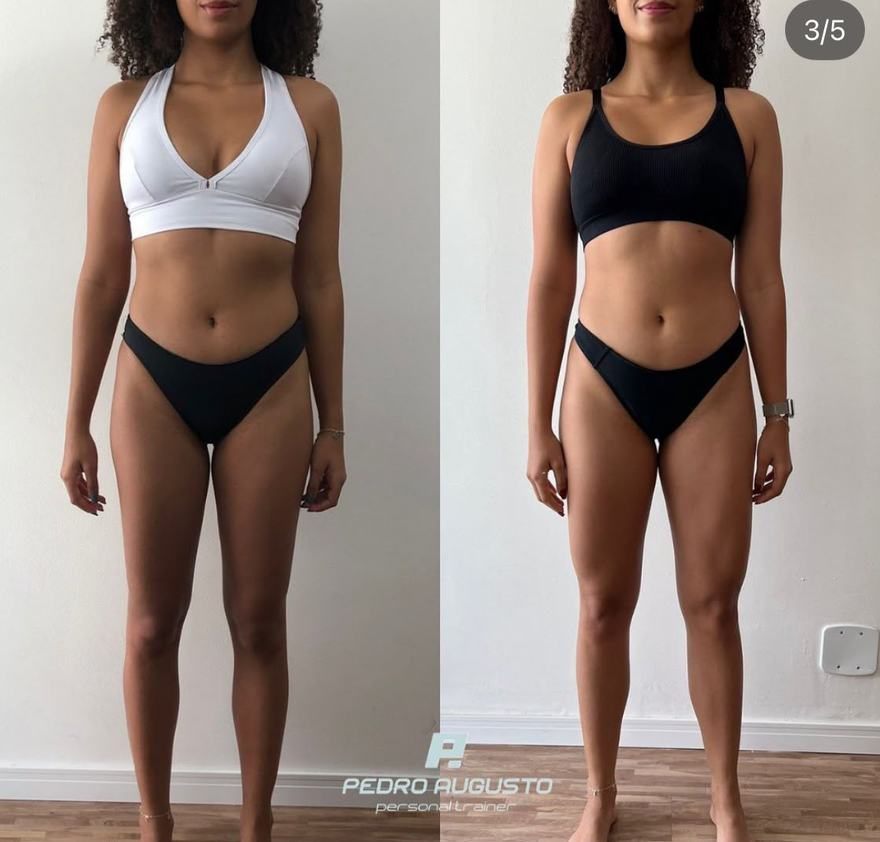
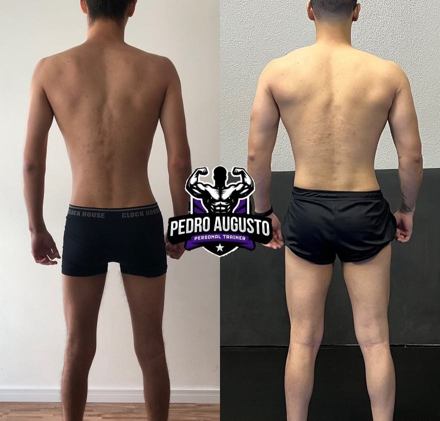
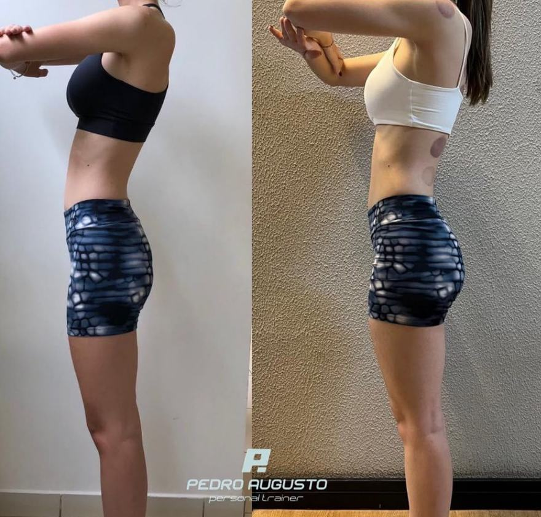
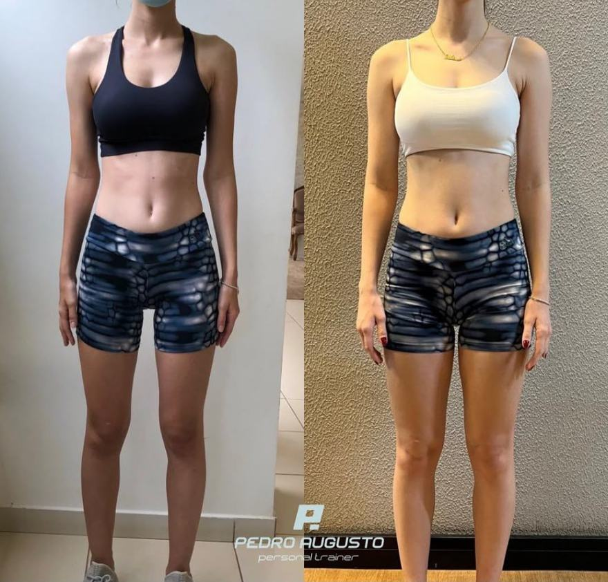
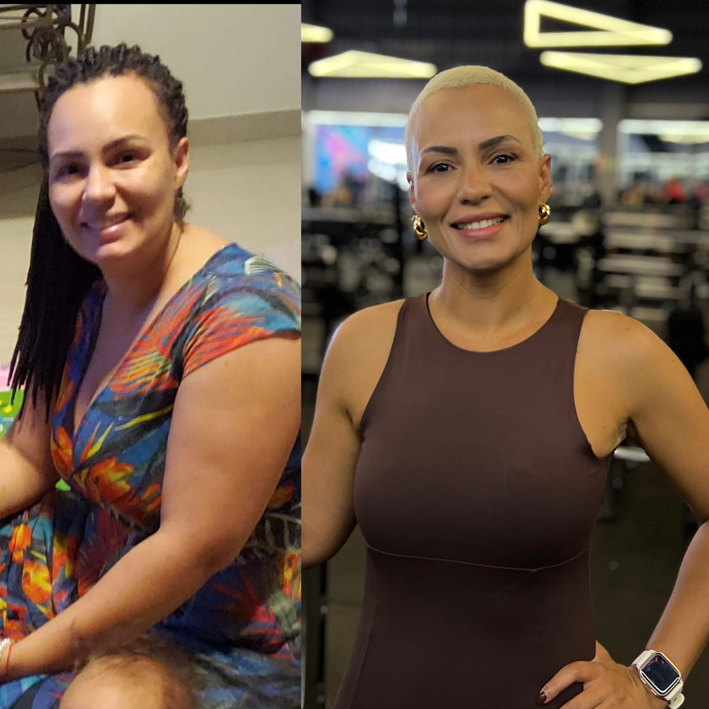
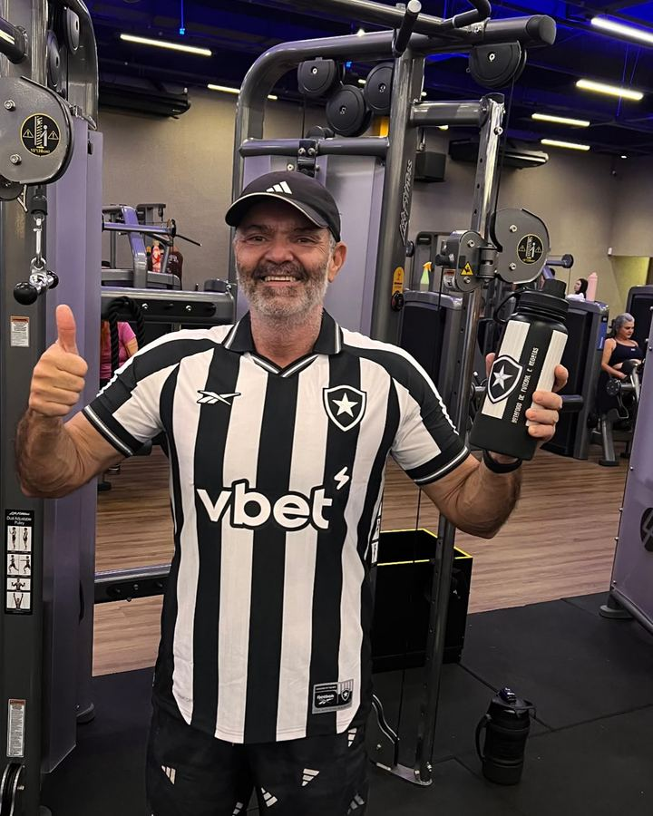
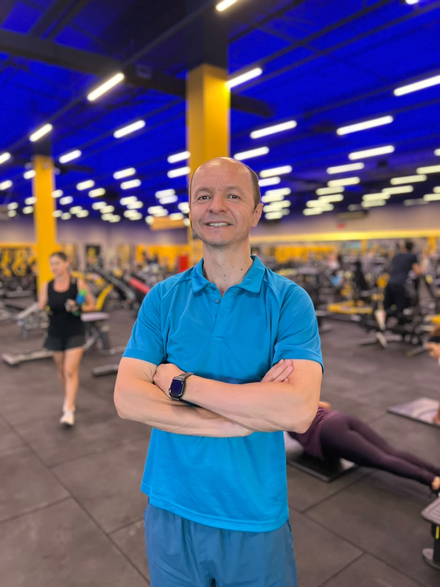

AntesDepois



Treine com quem vive o que ensina. Do primeiro treino ao palco, no presencial ou 100% online.
Subo no palco. Sei o que é progressão travando, dieta apertando e semana dando errado, porque isso acontece comigo também.
Toque em um e eu monto seu diagnóstico. São mais três perguntas, 40 segundos no total, sem cadastro e sem e-mail.






Você acreditou em mim quando eu mesma duvidava da minha capacidade.
Me conduziu com competência, paciência e sensibilidade. Respeitou minhas limitações, cuidou das minhas dores e nunca me deixou desistir. Sempre presente pra me orientar não só nos treinos e na alimentação, mas também no emocional.
Os resultados que estou conquistando têm muito, mas muito mesmo, do seu trabalho. E isso é só o começo.

Em muitos momentos em que pensei em desistir, foi a confiança dele que me fez continuar.
Hoje não vejo apenas mudanças no meu corpo, mas também na minha disposição, autoestima e qualidade de vida.
Recomendo o Pedro não apenas pelo conhecimento técnico, mas pelo ser humano extraordinário que ele é e pelo impacto positivo que faz na vida de quem treina com ele.

Depois de uma cirurgia ortopédica, retomar os treinos era um grande desafio.
Logo na avaliação percebi o vasto conhecimento técnico e o cuidado na prescrição dos exercícios. O acompanhamento individualizado foi fundamental na recuperação e no fortalecimento muscular.
O trabalho conduzido com progressividade foi determinante para a minha evolução e para os resultados alcançados.
Você já treina firme. Só falta o plano certo.
Você já tentou sozinho. Dessa vez tem alguém puxando.
Você rende mais com alguém corrigindo na hora. No Gama e região, no DF.
45 a 60 minutos. Se a sua semana só comporta três treinos, eu monto pra três. Plano que só funciona na semana perfeita não funciona nunca.
Vergonha vem de não saber o que fazer, não da academia. Você entra sabendo cada exercício, com vídeo de execução. Boa parte dos meus alunos chegou exatamente assim.
Pra quem consegue seguir um plano sozinho, sim. Pra quem precisa de alguém empurrando na hora, não. Não vou dizer que serve pra todo mundo, porque não serve.
Quase sempre sim, e é aí que a escolha do profissional pesa. Sou pós-graduado em Treinamento de Força para Grupos Especiais. Se for caso de liberação médica, eu vou pedir a liberação.
Dieta é do nutricionista e eu não invado essa área. Faço orientação alimentar dentro do que cabe ao personal e converso direto com o seu nutri. Se não tiver um, eu indico.
Não. Mensal, sem contrato e sem multa. Só peço que me avise se parar: prefiro entender o que não funcionou.
Me chama e eu monto seu plano. Sem compromisso e sem enrolação.
Chamar agoraSem julgamento e sem foto. Isso serve só pra calibrar o plano.
Pode mirar alto. Eu digo no fim quanto tempo costuma levar.
É o que costuma acontecer com quem chega no seu ponto, não uma promessa. Depende de quanto você aparece.
Mandar isso pro Pedro